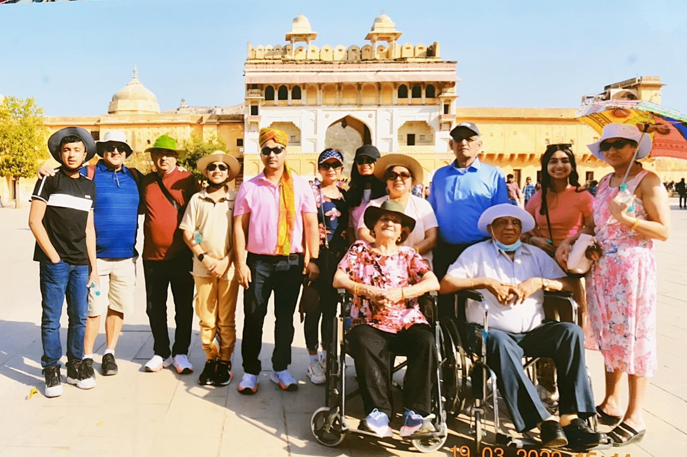
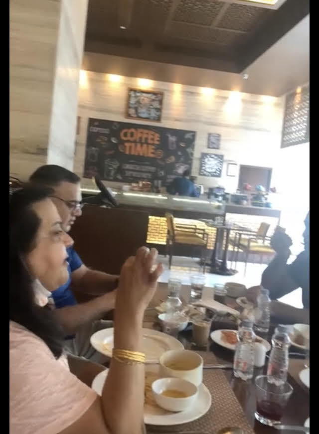
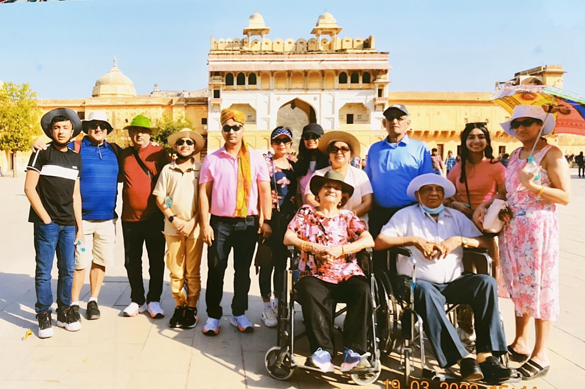
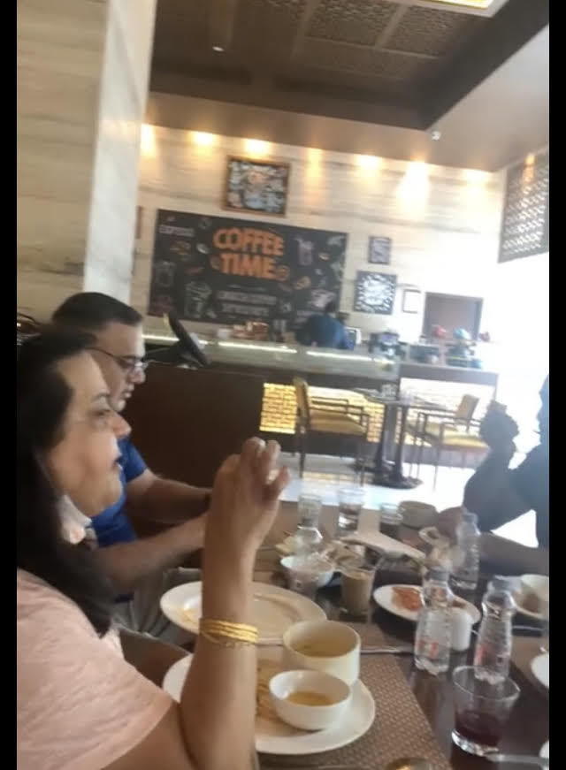

This was a very fun and nice trip. My family is all from india, we havent gone to india in 15 years! when we reached we found a driver who drives us around we learned a lot about the india history one of the things we learned was people in india got raided by britians and they couldnt do anything so they all jumped inside a well its a very tramutizing story and sad story. We all had fun in india the highlight of india was when I rode a camel and the hotels there were so nice.
When we reached india the weather was so hot it felt like we were sizzling on a pan, my family walked into the hotel, we were all very tired we walked into our hotel and it was so luxary we swam in the pool the country is very beautiful we were in new dehli it was beautiful we swam in the pool and then when we went downstairs the hotel had many resteraunts we went to a asian resteraunt it was very delicious, the resteruant was very expensive but we didnt care about price because we cared about if the food is good.The best thing in india was riding a camel and going to resteraunts the food in india is very tasty and healthier then what we have in america I went to india and lost 10 pounds. I miss india and I want to go back again because of how fun it was. What I would recomennd if you went to india I would go to a resteruant and then book a stay in the taj hotel its a very luxary and caring hotel. You can also stay at someones house but its not as fun as the hotels in india. The really funny thing about india is hown honking is how they talk on the road when you go to india all your gonna hear is honking but its really cool. The india commuinty is very nice and the streets of india are beautfuil because you see alot of people and Theres so many street food places its very cheap when you buy street food but it is really good. The taj mahal was a really good highlight of the trip it was beautiful and really nice there. It was crowded with thousands of people. I loved it.